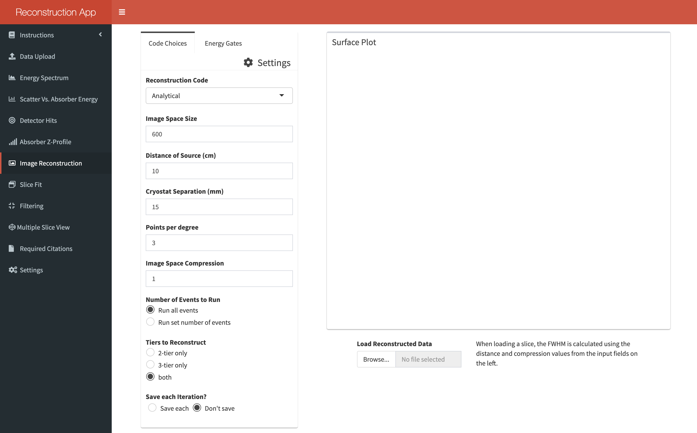

2.6 Reconstructing Data
On this tab you can feed the input data to one of the available image reconstruction codes. Currently only the analytical and SOE codes can be selected and their workings are described in the Instructions section of the app.

The various options which can be set are:
- Image space size: This is the size of the 2D slice which cones are projected onto. It must be a factor of 200 and the field can be manually typed into or you can hit the arrow keys on your keyboard to jump between allowed values.
- Distance of source: Distance of the source from the front of the scatter detector cryostat in centimeters.
- Cryostat separation: Inner distance between the scatter and absorber cryostats in millimeters.
- Points per degree: Degree of conic sampling. The projected cones cannot be continuous surfaces and so they are discretised into a set number of rays per angular degree of each cone.
- Image space compression: Size of the pixels on the slice. A larger value will produce a clearer image with less data.
- Number of iterations: This option becomes available if you opt to use the SOE code. It sets the number of iterations to be run.
- Averaging grid size: The size of the 2D density grid used by the SOE code. Its function is described in the app’s Instructions section.
- Nuber of events to run: If you select “Run set number of events” then the total number of events in the file will be displayed in a text input field. This value can then be altered to however many events you wish to run. The value indicates the number of events which shall be run after energy gates have been applied. An additional option will appear asking whether the events selected should be randomly sampled from the dataset or sequential.
- Tiers to reconstruct: Allows you to reconstruct events which interacted in 2-tiers, 3-tiers or both. This option is only available if a 9th column exists in the data.
Energy gates should be set from the Energy Gates tab before reconstruction and should reflect photopeak positions. The Energy Spectrum tab can be used to precisely find these values. Up to 5 energy gates can be set as of version 3.0.2.
You can also select whether or not the data should be saved. If it is to be saved then please remember to set the save directory from the Settings tab before reconstructing the data. The 2D slice from each iteration of the reconstruction codes will be saved as a vector. This file can then be loaded into the image reconstruction pane at a future time if you don’t want to wait for the reconstruction again.
You can also opt to produce a 3D plot from the data. I have included this as a separate option as the time it takes is fairly lengthy and it doesn’t provide much insight.